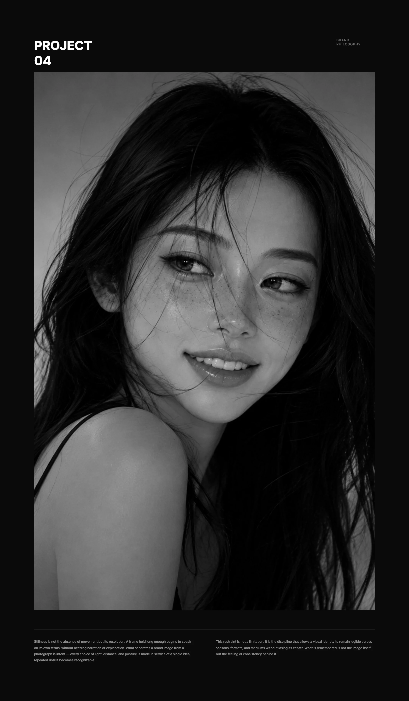
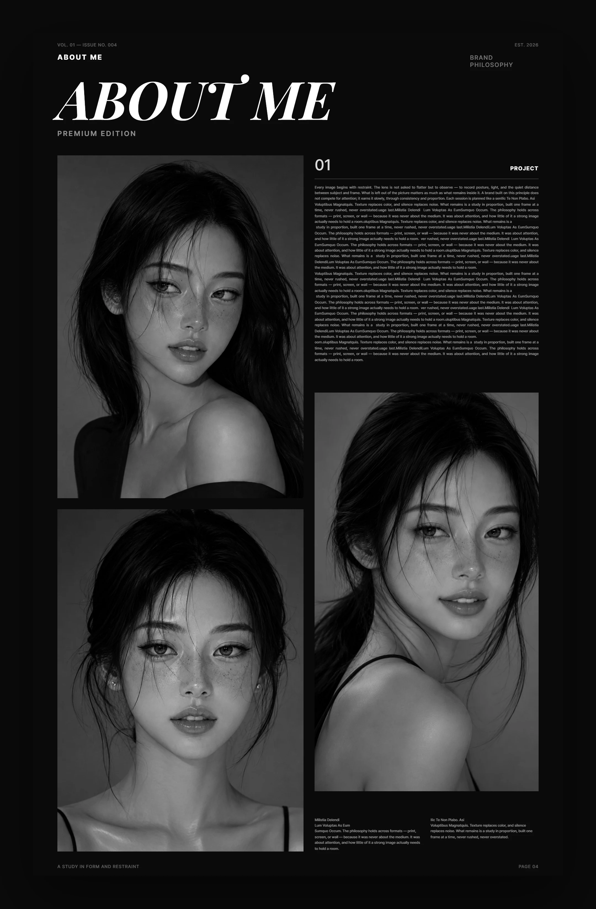

도화살롱 DOHWA SALON
ISSUE 01 / ABOUT ME
2026
ME,
edit
나라는 사람을 디자인한다.
색부터 취향, 속도, 이미지, 그리고 삶의 방식까지.
남이 정해준 기준이 아니라, 나에게 딱 맞는 ‘나만의 기준’을 찾는 일.
COLORTEMPERAMENTTASTEPRESENCE
ABOUT ME
PERSONAL
BRANDING.
「나라는 사람을 디자인하는 법」
ASTROLOGY, EDITED FOR REAL LIFE.
DOHWA SALON
퍼스널컬러
해봤지.
그래서 뭐,
좀 달라졌어?
뻔한 성격 유형? 이제 지겹고.
대충 때려 맞추는 운세? 내 복잡한 속은
하나도 모르잖아.

넌 네가 어떤사람 같아?
남들은 뒤에서
널 어떻게 얘기할까?
"사람들이 너를 처음 봤을 때 진짜 느끼는 첫인상."
"너를 유독 불편해하는 사람들이
은근히 피하는 이유"
CONTENTS
전 31개 챕터 · PREMIUM EDITION
PART 1제1부 메타인지
01.친구가 다른 친구에게 나를 소개한다면?
02.사람들이 은근히 부러워하는 내 모습은?
03.사람들이 나에게 차마 말하지 않는 것은?
04.나를 싫어하는 사람들의 공통점
05.
06.
07.
08.
PART 2제2부 시그니처
09.내 추구미와 사람들이 보는 나의 차이
10.첫인상 3초 공식
11.
12.이성에게 어필되는 부분
13.나의 X들은 나를 어떻게 기억할까?
14.
15.사람들이 결국 기억하는 나의 한 가지
PART 3제3부 SNS의 미학
16.나는 얼굴을 드러낼수록 유리할까?
17.내가 유명해지려면?
18.내 매력이 가장 돋보이는 플랫폼
19.AI 시대에 나는 무엇을 하는 사람인가
20.1인 사업, 나인가 브랜드인가
PART 4제4부 관계
21.친구들 무리에서 나는 어떤 캐릭터일까?
22.나와 잘 맞는 사람의 공통점
23.나와 자꾸 부딪히는 사람의 공통점
24.나와 같이 일하면 어떤 사람인가
25.관계 속 나의 경계선
26.나는 어떤 방식으로 사람과 깊어질까?
PART 5제5부 결론
27.MY INITIAL CODE
28.ME IN 6
29.PEOPLE WILL REMEMBER
30.MY USER MANUAL
31.MY DEFAULT SETTINGS
FINAL PROFILE · THIS IS ME.
“나를 꿰뚫지 못하는
두루뭉술한 운세풀이”
뻔한 소리는 질색이야.
"사주X수비학X자미두수로 3차 검증"
듣기 좋은 소리로 기분만 맞춰주고 끝내지 않아.
“아, 그래서 맨날 이 모양이었구나”
무릎을 탁 치게 만들지.
한 번 읽고 버리는 게 아니라,
인생이 꼬일 때마다 꺼내보는 너만의
인생 치트키 북.
남의 입으로 듣는 나
“말이 많은 편은 아닌데, 대충 듣지는 않아. 결정할 땐 확실하고.”
친구가 친구에게 당신을 소개한다면 아마 이럴 겁니다. 관찰력이 깊은 당신은 상황 전체가 보일 때까지 반응을 아끼죠. 사람들은 이 시간을 ‘거리감’으로 읽지만, 가까워진 사람은 압니다. 당신이 조용한 건 무엇이 중요한지 고르는 중이라는 걸요.
당신이 말이 짧아졌다면? 이미 결정은 끝난 겁니다. 같은 관찰력이 앞에서는 신중함으로, 뒤에서는 구체적인 관심으로 보입니다.
전에 한 말을 기억해 선택에 반영하고, 문제가 생기면 감정의 양보다 핵심부터 정리해 줍니다.
거리감은 높음에서 중간으로, 단호함은 중간에서 높음으로 움직입니다. 이 지표는 사람들이 당신을 해석하는 순서에 가깝습니다.
앞에서 아낀 반응이 뒤에서 어떻게 쓰이는지 알면, 같은 태도로도 원하는 인상을 만들 수 있습니다.
CHAPTER 01 · 계속발행본에서 전문 열람
유독 부딪히는 이유
당신을 싫어하는 사람들은 조용한 사람을 싫어하는 게 아닙니다. 대화의 주도권을 말의 양으로 확인하는 사람, 분위기로 결론을 밀어붙이는 사람, 자신의 감정을 상대가 알아서 처리해주길 바라는 사람과 부딪힐 가능성이 큽니다.
긴 이야기를 듣고도 핵심이 하나라고 판단하면 그 하나만 남깁니다. 누군가에게는 명쾌하지만, 자신이 쌓아 올린 말이 힘을 잃었다고 느끼는 사람에게는 가시처럼 박힙니다.
반대로 기준을 존중하는 사람은 이 태도를 편하게 느낍니다. 싫은 걸 돌려 말하며 시험하지 않으니까요.
문제는 단호함이 아니라 상대가 그 단호함의 근거를 들을 기회가 있었느냐입니다.
조심할 건 더 친절한 사람이 되는 일이 아닙니다. 정답만 전달하는 사람으로 보이지 않는 것.
CHAPTER 04 · 계속발행본에서 전문 열람
단톡방 시뮬레이션
MY ROLE최종 결정 버튼
민지 · 이번 주 토요일 만날 사람
수현 · 나 가능 / 지우 · 나도
민지 · 그래서 어디서 봄
나 · 성수 6시. 싫은 사람 3분 안에 말해
민지 · 역시 너밖에 없다
당신은 대화가 길어질 때 판을 정리하는 리더입니다. 본인은 부정할지 모르지만, 막히는 순간 사람들은 자연스럽게 당신을 봅니다. 메시지 참여율은 중간, 상황 파악률은 최상. 친구들이 기대하는 것은 늘 하나, “쟤가 정해주겠지.”
단점도 분명합니다. 기다린 시간이 길수록 마지막 말이 단호해져서, 다른 사람은 참여할 틈을 잃었다고 느낄 수 있습니다.
같은 역할은 가족 안에서도, 회사 안에서도 반복됩니다. 이름만 달라질 뿐 당신이 맡는 자리는 비슷합니다.
CHAPTER 21 · 계속발행본에서 전문 열람
FINAL PROFILE
ME, BY DESIGN.
INITIAL CODE9-A1
TYPE의미우선형
SIGNATURE편집
FIRST IMPRESSION차분하고 쉽게 허점을 보이지 않음
AFTER KNOWING ME생각보다 단호하고 웃음 포인트가 선명함
ATTRACTION POINT시선 · 짧은 말 · 정확한 기억
IN A CIRCLE최종 결정 버튼
ONLINE장면에 맥락을 붙이는 사람
ONE THING TO REMEMBER이해한 것과 책임질 것은 다르다
THIS IS ME.발행본에서 전문 열람
🔋 현재 에너지 상태
‘강제 절전 모드’
멘탈이 털리면 대화로 풀기보다 일단 카톡을 읽씹하고 잠수 타는 타입.
女
김님★★★★★
“내 일상 행동 패턴을 고발당한 기분이에요.”
사주나 타로 볼 때는 그냥 두루뭉술한 소리만 듣고 말았는데, 이건 아예 제 일상 행동 패턴을 고발당한 기분이에요ㅋㅋ 특히 단톡방 역할 시뮬레이션에서 너무 소름 돋아서 폰 던질 뻔했습니다.
女
★★★★★박님
“팩폭해 줘서 오히려 신뢰가 가더라고요.”
첫인상이 남들에게 어떻게 박혀 있는지 궁금해서 해봤는데, 듣기 좋은 칭찬만 써 있는 게 아니라 "이래서 주변 사람이 피곤하다"까지 팩폭해 줘서 오히려 신뢰가 가더라고요. 다 읽고 나니까 내 쓸데없는 에너지를 어디에 쏟고 있었는지 정리가 싹 되네요.
男
정님★★★★★
“너랑 소름 끼치게 똑같다고 DM이 왔어요.”
디자인이랑 레이아웃 감성이 진짜 미쳤어요... 인스타 스토리에 '5 SECONDS OF ME' 한 장 올렸더니 친구들이 DM으로 "이거 어디서 했냐, 너랑 소름 끼치게 똑같다"고 연락 오더라고요. 뻔한 테스트랑은 결이 다릅니다.
女
★★★★★이님
“나를 다루는 사용설명서를 손에 쥔 기분입니다.”
퍼스널 브랜딩 하겠다고 이리저리 흔들리고 있었는데, 이 리포트 읽고 내가 SNS에서 어떤 면을 밀어야 사람들이 입덕하는지 정확히 답을 찾았어요. 나를 다루는 구체적인 사용설명서(USER MANUAL)를 손에 쥔 기분입니다.
女
추님★★★★★
“내 인간관계가 왜 꼬였는지 한눈에 보였어요.”
첫인상(회색 점)에서 친해진 뒤(분홍색 점)로 이어지는 슬라이더를 보는데, 왜 내 관계가 자꾸 꼬였는지 원인이 바로 보이더라고요. 감정에 호소하는 위로보다 이런 날카로운 분석이 훨씬 도움 돼요.
男
★★★★★윤님
“내 머릿속을 엑스레이 찍은 것 같아요.”
태초의 소스코드부터 나를 재조립해 주는 느낌이라 마지막에 AirDrop 수락할 때 쾌감이 장난 아니에요 ㅋㅋ 대만족!

성격,연애,
MONEY
사주 따로 볼 시간에
이거 하나면 돼.
어차피 이 모든 건 ‘나’라는 한 사람의 서사니까.
흩어져 있던 너라는 조각을 한 번에 맞추는
유일무이한 거울.
ME
ABOUT ME가 ‘나’를 공유하려고 합니다.
9-A1 · 의미우선형
궁금한 건 결국
하나야.
“나는 대체 어떤 사람이지?”
+
KEEP
굳이 바꾸지 않아도 되는 당신만의 고유성
+
GROW
앞으로 더 크게 써먹어도 되는 당신의 필살기
−
LESS
불필요한 소음을 덜어낼 당신만의 경계선
×
NEVER
아무리 좋아 보여도 당신과 결코 맞지 않는 방식
그 끝없는 질문에
마침표를 찍을 시간.
더 이상 인터넷 헤매지 마.
ABOUT ME에서
정답을 알려줄게.
31 CHAPTERSWEB REPORT1 DAYFOREVER ACCESS
ABOUT ME
DOHWA SALON · @BY NAYUN
본 리포트는 생년월일시 원국에 근거해 작성되며, 무단 복제 및 재배포를 금지합니다.
상호명 훈엔터 · 사업자등록번호 187-15-03050 · 인천광역시 계양구 주부토로
ⓒ 도화살롱 · DOHWA SALON